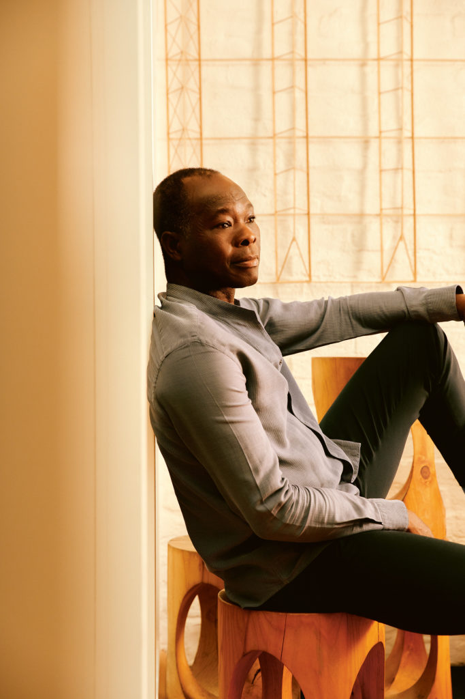
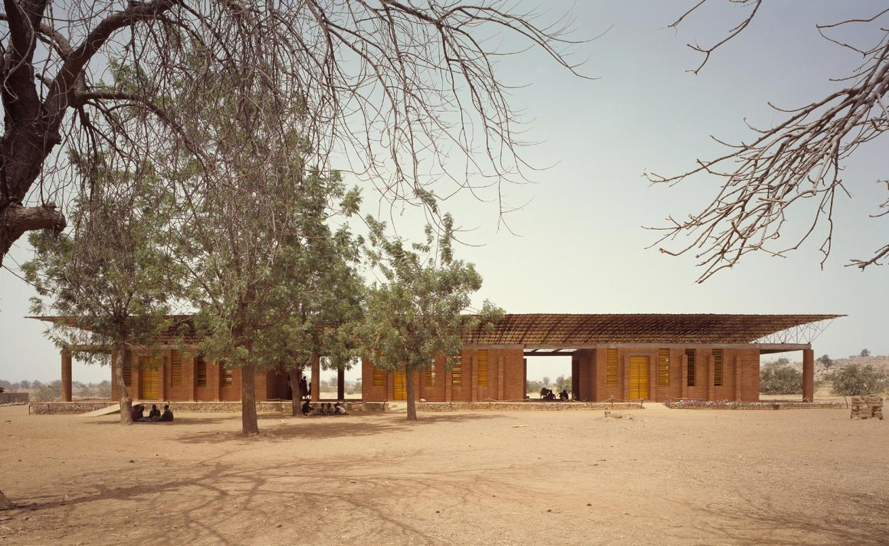
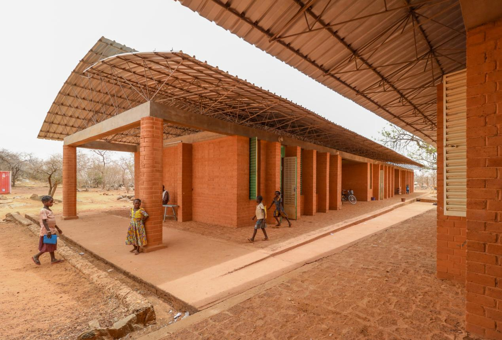
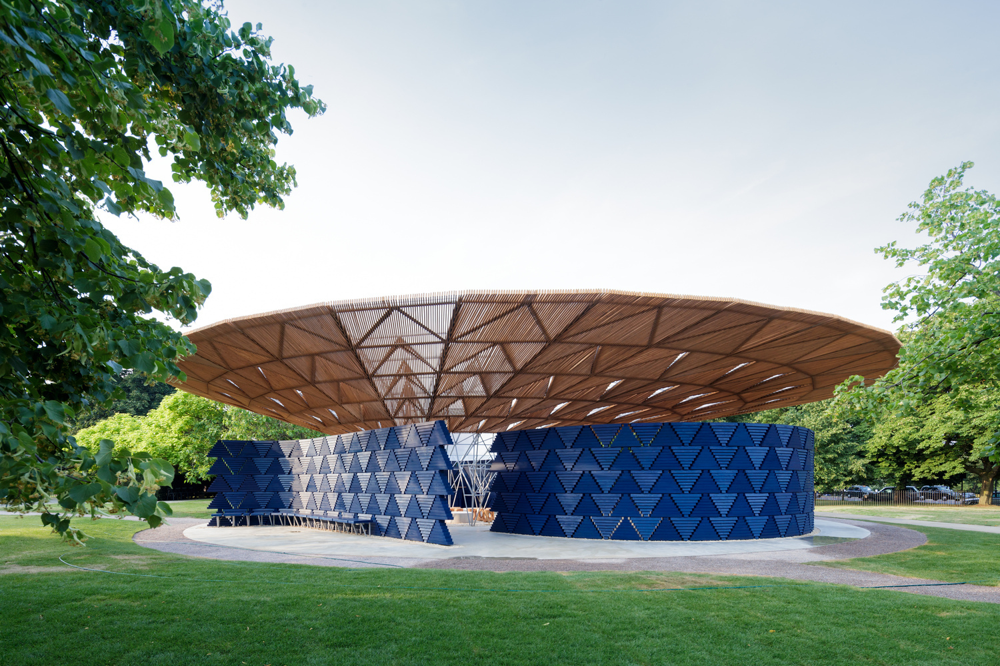

首位非洲建筑师获行业最高奖，他让穷人拥有品质生活
作者：王新俊 - 国际在线
如同非洲多姿多彩的文化、艺术一样，非洲的建筑也非常多样化。然而，与广为人知的一些世界不同地区的建筑风格相比，世人对当代非洲的建筑风格知之不多。
随着西非国家布基纳法索建筑师、教育家和社会活动家迪贝多·弗朗西斯·凯雷（Diébédo Francis Kéré）荣获2022年全球建筑界最高荣誉奖普利兹克奖，非洲也向世界打开了一扇多彩的当代建筑魅力之窗。
弗朗西斯·凯雷
非洲人首获世界建筑界最高荣誉奖意义非凡
3月15日，美国芝加哥悦基金会宣布，将第51届普利兹克建筑奖颁给凯雷，他也成为获得这一奖项建筑界最高荣誉奖的第一位非洲人，同时标志着普利兹克奖重新关注被边缘化的建筑实践。而要想知道凯雷的获奖有着怎样的意义，就要先了解一下普利兹克建筑奖是一项什么样的大奖。
普利兹克建筑奖于1979年由美国芝加哥人杰·普利兹克及其妻子辛迪设立，由普利兹克家族所属凯悦基金会每年颁发一次，以表彰—位或多位当代建筑师在作品中所表现出的才智、想象力和责任感等优秀品质，以及他们通过建筑艺术对人文科学和建筑环境所作出的持久而杰出的贡献。每年约有500多名从事建筑设计工作的建筑师被普利兹克建筑奖提名。
普利兹克建筑奖通常被誉为“建筑界的诺贝尔奖”和“业界最高荣誉”，获奖者可以得到10万美元奖金和一个正式的获奖证书，自1987年开始还增加了一枚铜质奖章，奖章正面图案以芝加哥著名建筑师路易斯·沙利文的设计为基础，刻有“普利兹克建筑奖”字样，获奖者的姓名刻在奖章正中。奖章背面刻有三个词：“坚固、价值和愉悦”，以呼应古罗马建筑师维特鲁威在其《建筑十书》中提出的建筑三条基本原则：“坚固、实用和美观”。
凯雷通过自己的工作创造给人们带来的礼物——不仅仅局限于建筑学科领域的礼物，使他成为2022年普利兹克奖得主。
因为有着布基纳法索和德国双重国籍，普利兹克奖评审团对凯雷有着这样的评价：“在极度匮乏的土地上，开创可持续发展建筑。他既是建筑师也是服务者，通过美丽、谦逊、大胆的创造力，清晰的建筑语言和成熟的思想，改善了地球上一个时常被遗忘的地区中无数居民的人生和经历，给人带来建筑学科范畴之外的馈赠，凯雷坚守了普利兹克奖项的使命。无论是从专业层面还是个人层面来看，这位备受赞誉的建筑师在布基纳法索和德国都同样重要。”
凯雷建筑设计作品：自己的家乡甘多小学
童年梦想照亮建筑师成长之路
凯雷1965年出生于布基纳法索中南部的甘多村。直到今天，布基纳法索依然是联合国公布的世界最不发达国家之一。而凯雷儿时的甘多，就更加贫穷落后，没有干净的饮用水、电力和基础设施，更谈不上建筑。凯雷对建筑的第一感觉来自缺乏通风和照明的少年时代教室及童年回忆。他说：“我在一个没有幼儿园的社区长大，每个人都照顾我，整个村庄就是我的游乐场。我的日常生活中为了食物和水工作，但我们也会在一起聊天，一起建房子。我记得我的祖母会坐在房间里，靠着一点灯光给我们讲故事，我们会互相挤在一起，她的声音在房间里包围着我们，召唤我们靠近，形成一个安全的地方。这是我对建筑的第一感觉。”
凯雷建筑设计作品：布基纳法索乡村歌剧院
凯雷是甘多村长的儿子，也是村里第一个上学的人，只是甘多并没有学校，所以他7岁就离开了家人。他在滕科多戈的小学教室是用水泥砌成的，缺乏通风和采光。在那种极端气候下，他与100多名同学挤在一起上课，一次要忍受好几个小时，他发誓有一天一定要让学校变得更好。
凯雷说：“在布基纳法索，好的建筑就是一间教室，你可以坐在那里，让滤过的光线按照你想要的方式进入，照在黑板上，或洒在课桌上。我们怎样才能带走太阳的热量，同时又能充分利用光线呢？要创造气候条件来提供基本的舒适感，实现真正意义的授课和学习，体会教学的乐趣。”
1985年，20岁的凯雷背井离乡，凭借职业木匠奖学金前往当时的东德首都柏林勤工俭学，白天学习如何搭建屋顶和制作家具，晚间攻读中学课程。10年后的1995年，凯雷获得奖学金进入柏林工业大学，并于2004年毕业，获得了建筑学高级学位，此时他已年近40岁。1998年，凯雷创立了“甘多学校建材基金会”，后来改名为“凯雷基金会”，为儿童能够拥有舒适教室进行募捐和宣传，他的第一座建筑作品——甘多小学于2001年建成，也为其建筑理念奠立了基础，那就是为社区打造一个动力源泉，于功能上满足基本需求，于本质上弥补社会不公。
为了以有限的资源建造学校，同时保证建筑设施足以应对当地的酷热高温和恶劣的照明条件，凯雷就地取材，用最常见的黏土经过水泥强化，打造出可以聚集热量的砖块作为建筑墙面，并因地制宜地开发了一套性能卓著又极富表现力的建筑语言，包括双层屋顶、通风塔、间接光照、交叉通风和遮阳室等，而不是传统的窗户、门和廊柱。这套设施可将凉爽的空气保留在室内，同时又能让热量通过砖块天花板和宽大的悬空高架屋顶散发出去，从而在没有空调的机械干预下实现通风。
在建造甘多小学过程中，从构思到完工，当地人为凯雷提供了资金、劳动和资源，在他的“创造性地使用本地材料和现代工程的指导”下，手工建造出学校的每一部分。这个项目的成功使学校的在读学生人数从原先的120名增加到700名，并进一步在2004年建成了教师住房、2008年进行了学校扩建，2019年建成了图书馆，等等。甘多小学的成功使凯雷在2004年获得了阿伽·汗建筑奖，并成为他2005年在德国柏林创立建筑师事务所的催化剂。在建造甘多小学时，凯雷也在向当地人传授建筑知识，未来，充满当地特色、继承民族智慧的建筑将在这个贫瘠的土地上遍地开花。
凯雷说：“我希望能改变人们的思维定式，推动他们去实现梦想、承担风险。不能因为富有，就理所当然地浪费材料。不能因为贫穷，就故步自封不去尝试追求品质，每个人都理应享受品质，每个人都理应享受舒适，每个人都理应享受‘奢华’。人与人是紧密连接在一起的，对气候、民主和物质匮乏的忧虑是我们所有人共同的课题。”
凯雷作品向世界打开当代非洲建筑魅力之窗
中国人说，“三百六十行，行行出状元。”此言不虚。凯雷通过自身不断地努力，2022年摘得有着全球“建筑界诺贝尔奖”之称的建筑界最高荣誉奖普利兹克奖桂冠，从而成为世界建筑设计界的“状元”，而他的建筑设计也向世界打开当代非洲建筑魅力之窗。
凯雷的中小学校舍作品产生的影响力推动了众多新机构的诞生，每一家机构都对当地的气候环境和可持续性发展体现出足够的敏感度，无疑将惠及后世数代。
他2021年设计的肯尼亚图尔卡纳的狮子初创园区，是一个信息和通信技术主导的理工类院校园区，它通过使用当地开采的石料和堆栈塔进行被动冷却，以最大限度地降低保护技术设备所需的空调开销。2020年设计的布基纳法索中部城市库杜古的布基纳理工学院一期，建筑外墙采用冷却黏土现场浇筑而成，从而大大缩短了工期。悬垂的桉树遮阳能力极差又消耗土壤中的养分，而在这里被重新利用来衬托倾斜的波形金属屋顶，以在这个国家短暂的雨季期间保护建筑物。雨水被收集至地下储存，用于灌溉园区内的芒果种植园。
满怀着民族自信与建筑理想，凯雷将职业生涯中最为关键且最具雄心的项目之一付诸现实——布基纳法索瓦加杜古国民议会大厦，设计委托业已完成，但建筑因局势动荡而仍未完工。
凯雷的设计饱含象征意义，在甘多乡村的成长经历也对他在非洲以外的建筑作品影响颇深。在圣树下交流思想、追忆往事、庆祝和集会的西非传统贯穿始终。
在2019年美国加利福尼亚州科切拉谷音乐艺术节建造的“庆典之家”，是以凯雷的母语比萨语命名的，其设计受到非洲空心猴面包树形状的启发。在他的家乡，这种树因其药用价值备受尊崇。
他2017年设计的英国伦敦蛇形画廊的中央结构取自大树的形状，外围蜿蜒曲折、互不相连的墙体由三角形靛蓝色模块组成，蓝色在他的文化中是象征力量的颜色，也是建筑师儿时穿过的蓝色波布服的颜色。悬挑的大屋顶与他在非洲的建筑如出一辙，其漏斗形体量可收集雨水用来浇灌景观绿地，提醒人们关注世界各地正在经历的水资源短缺现象。
凯雷建筑设计作品：蛇形亭
凯雷设计的贝宁波多诺伏国民议会目前正在建设中。它坐落在一个公园里，设计灵感来自议事树，虽然议会会议在建筑内部召开，但民众也可以在大楼底部巨大的遮蔽区域内集会。
凯雷的建筑作品位于非洲各国，包括贝宁、布基纳法索、马里、多哥、肯尼亚、莫桑比克和苏丹等。展馆和装置作品则分布在丹麦、德国、意大利、瑞士、英国和美国等地。他的重要作品还包括美国蒙大拿州一个艺术中心的展亭、布基纳法索莱奥医生之家、布基纳法索库杜古一所中学、马里巴马科国家公园和布基纳法索拉昂戈歌剧村。
凯雷的建筑设计作品提醒人们，在努力为数十亿人提供足够的建筑和基础设施时，必须为改变不可持续的生产和消费模式而斗争。他提出了一个基本问题，即在技术不断变化以及结构的使用和重新使用的背景下，建筑的永久性和耐久性的意义。同时，他对当代人文主义的发展融合了对历史、传统、精确性、书面和不成文的规则的深刻尊重。